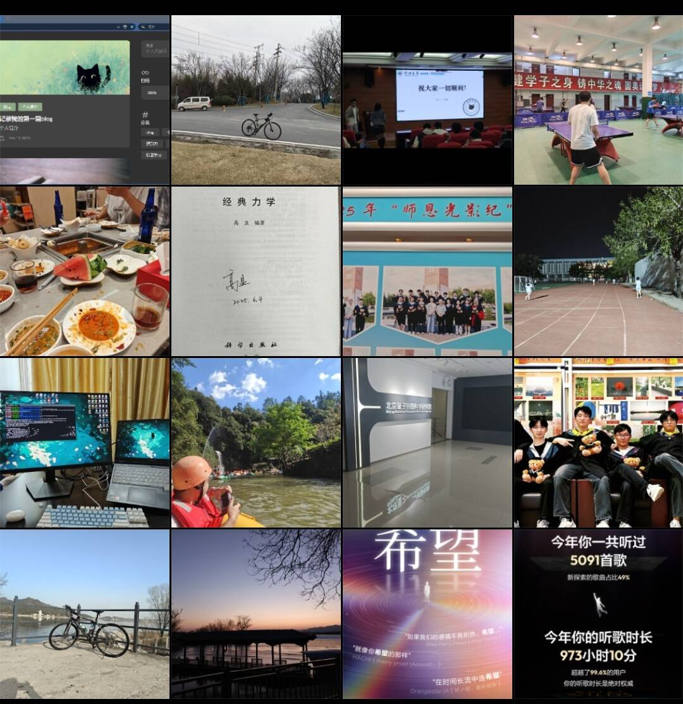

又是一年过去，与往前不同，这次我在离科学最近的雁栖湖畔写下这次年度总结。
学业
今年年初先是玩了一下开源的YOLO，随后上线了自己的blog网站，寒假期间除了在改写了几篇笔记之外更多是在休整。返校后的2，3月份，我先是做了一个关于引力波振荡行为的调研，随后带着Y学弟进行对文章 [2501.14681]([2501.14681] How deep is the dip and how tall are the wiggles in inflationary power spectra?) 的复现，同时也重新学了一遍大物和高数给几个小同学上课。大概在4月初复现出了主要的公式，但是在后面套用我们的模型时发现并不能给出有很好的物理意义的结果，该工作便于 5 月初搁置。此外，在4月底左右我的主要精力也放在毕业论文上了，这个工作主要是24年保研后做的，所以我只需要将其整理并补充背景即可。值得一提的是，之前复现 [2501.14681] 的尝试并非徒劳，我觉得它对Muhanknov-Sasaki方程的物理类比很有意思，便把它写进了我的毕业论文里面，最终庆幸地拿到了“优秀毕业论文”。
到5月末，临近答辩时，导师给了我一篇文章 [1309.3514] A polynomial f(R) inflation model让我复现。这个工作还算简单，因为其主要是解析计算，甚至不太需要MMA就可以完成，随后让我计算一个更加复杂的指数形式 $f(R)$ 暴胀模型的 $r$ 和 $n_{s}$ ，并且在暑假期间我主要也在不断对这个工作进行完善，同时初步学习了使用linux系统和cobaya。最终，在10月份这个工作总算是挂出来了[2510.18320] The implications of inflation for the last ACT。虽然内容尚简，但这是我完整经历科研全流程的第一篇工作。当然，在这个过程中也接了一些讲习大物和高数的单子，也算是锻炼了一下自己的讲课能力吧。
在9月份，先是讲了一篇论文[2507.08737] Quantum production of gravitational waves after inflation，虽然讲得有些那么不尽人意，但是收获颇多，尤其是在本科生和研究生身份转变阶段意思到自己做研究的缺点还是有益的。此外，我这时的主要精力也放在一个关于 $H_{0}$ tension的工作上，不过新模型效果也并不是那么让人满意，到目前我虽然没有时间去改进代码以推进这个工作，不过在看了写文献后还是有些思路的，准备等假期再做做试试。
来到雁栖湖后，课业繁重，尤其是经历了一年“惬意时光”后，广相、场论和群论这“三座大山”让我倍感压力。从11月中旬后我也没精力（也可能是一种逃避）去推进科研。这也给我一个提醒，下学期可以不选那么多理论课，也许可以看看有没有合适的代码课，这样锻炼自己的代码水平的同时也可以有更多时间来完成科研相关的任务/娱乐。当然，这学期收获还是不少的，尤其是对于场论的学习，我不能说学得有多好，至少做了不少计算，面对场论的很多概念还算清晰。对于群论最近也是在学习李群这一部分的内容，黄飞老师的课比本科学的还是要深入不少，且目前距离考试还有2周左右的时间，看似时间紧张但我心里好像不是很紧张（过了假期估计就不是这个状态了doge）。最后是广相，这算是第三遍学习了，不过田老师的课还是收获颇多的，就是吴老师的课太抽象了，还得课后自己多花时间整理整理，而且这部分“很数学”的内容在科研上还是挺常见的。
总而言之，上半年的悠然惬意和下半年的繁忙充实形成鲜明的对比，不过这也可能是好事，毕竟做理论物理至少理论基本功还是要有的。此外，在保持清醒的同时还是少接触太多负面的消息和想法吧，我觉得最近有些过于消沉了，思考物理应该是有趣的，也是枯燥的，但不应该是过分功利的（保持必要的功利还是要的，毕竟生存才是第一要素），也可能是临近期末的压力造成的吧，总之，还是需要保持一个良好的心态吧。
身体方面
今年身体比起去年下半年还算有所进步，目前甚至可以逼近保研前的巅峰状态（单从跑步方面来看）。但是作息这块还是有所缺陷，不管是在校还是在家都有不少时间是凌晨2点才休息，至少为了头发以后还是尽可能少熬夜吧。3月份回学校后打了段时间篮球，虽然技术一直不咋地但也挺好玩的，尤其是“拼可乐环节”，不过后面天气渐暖人多了起来也就慢慢放弃了。此外，4，5月份打球也算是打爽了，不是泡在乒乓球馆里面就是在本源打羽毛球，两者的技术也是有所提高，尤其是乒乓球的正手。然而，到了湖里一周一次的乒乓球都难以维持，一方面是学习时间紧张，另一方面是2天一次的跑步若打次球便容易中断，且球馆的费用也是原因之一。
对于骑行这块今年远比不上热情满满的2024，印象里只有3次，第一次是3月份做完调研后从学校骑去了大概叫“忆江南”的地方，来回只有 $30 +\ \mathrm{km}$ ；第二次是从北京市区骑到雁栖湖，大概 $60\ \mathrm{km}$ ，这次体验可谓“惨痛”：早起回所听了一天讲座，傍晚 5 点才出发，夜路无灯、寒风刺骨、手机没电，到达学校已是晚上 9 点半；最后一次是11月底，从学校骑去了怀柔水库，来回 $45\ \mathrm{km}$ ，还算不错，轻松惬意，甚至还有路人给我加油。
总体来看，今年的身体状况算是在走一个螺旋上升的趋势，上半年在学校打球，中间（暑假）有过小幅下跌，但后来在雁栖湖规律的跑步以及举铁锻炼下也是稳步提高，希望2026继续保持。
人际交往与活动
今年的活动似乎比去年的活动要单调不少，仔细想想，上半年首先是春节期间去了趟深圳看看，现代大城市的繁华与忙碌的氛围和上海尤为贴近，不过北京给我的确是另外一种感觉，可能与待的时间长短有区别，毕竟只有在北京是算真正的“生活”过。然后是3月策划了一次保研经验分享，虽然时间安排不是很恰当以及活动前的线上测试有些失误，但是总体来看效果还算不错，至少资料比上一届充实很多。然后是4月份一整寝室来北京玩了一趟，累但还算开心吧，至少在py家吃得很开心。最后是临近6月份在zzu毕业了，不巧的是拍毕业照的时间与高显老师关于修改引力的一些学术讲座有所冲突，但我选择两者都要，在讲座正式开始前还帮Y学弟要了个签名，讲座后也是急忙赶着去拍毕业照。在zzu的最后几天是繁忙与伤感同在的阶段，离别的句号最终画在了与y学弟1 ，蔡老师，S室友，以及X同学与S同学的几次推杯换盏中，画在深夜里被bug阻碍的代码中，画在奔跑过无数次的南操上，也画在那趟差点错过的列车上，终究还是呈现给了时间。
下半年正式步入“牛马”研究生阶段。暑假在跑程序与看论文的间隙去漂流了一趟。随后在来湖之前，在py的帮助下到北京量子院待了2天，结识了幽默风趣的T学长，给我讲了不少他与PKU的C老师的有趣故事。到湖里后，生活就略显单调了，但也认识了不少新朋友，同时湖里的学习氛围要比本科浓厚太多，让我感觉到终于不是孤独地在物理道路上行走了，但与之伴来的也是沉重的peer pressure，但我想保持自己合适的节奏更为重要。
不足与进步
今年最大的不足可能还算作息的问题，可能还是要逐渐改进吧，争取保证在12点上床，起床之后少刷手机。另外一方面就是学习不够沉浸，很多时候都是大概扫一眼内容而缺乏具体的计算，也许看不那么重要的文章可以这样看，但是学习课内的内容是不能有这样的习惯的，还是要在扎实的计算中去体会物理图像。
今年最大的进步或许是在科研写作这方面，经历了一次完整的“写 $\to$ 改 $\to$ 推倒重来 $\to$ 反复打磨”的过程，虽然很累但是收获是很充足的。另外一点就是在湖里基础知识的收获还是挺多的，身体也有更好的状态，甚至还坚持了2个月的背单词2 。
展望
首先是希望明年更多地提高自己的代码能力吧，虽然现在有AI的帮助，但更重要的还是自己的思考以及方向的把握，在实操中提高自己。另外，就是身体素质继续加强，今年最大的感悟也许是身心健康比任何科研成果都重要，毕竟人生在世，生存才是第一要素。
